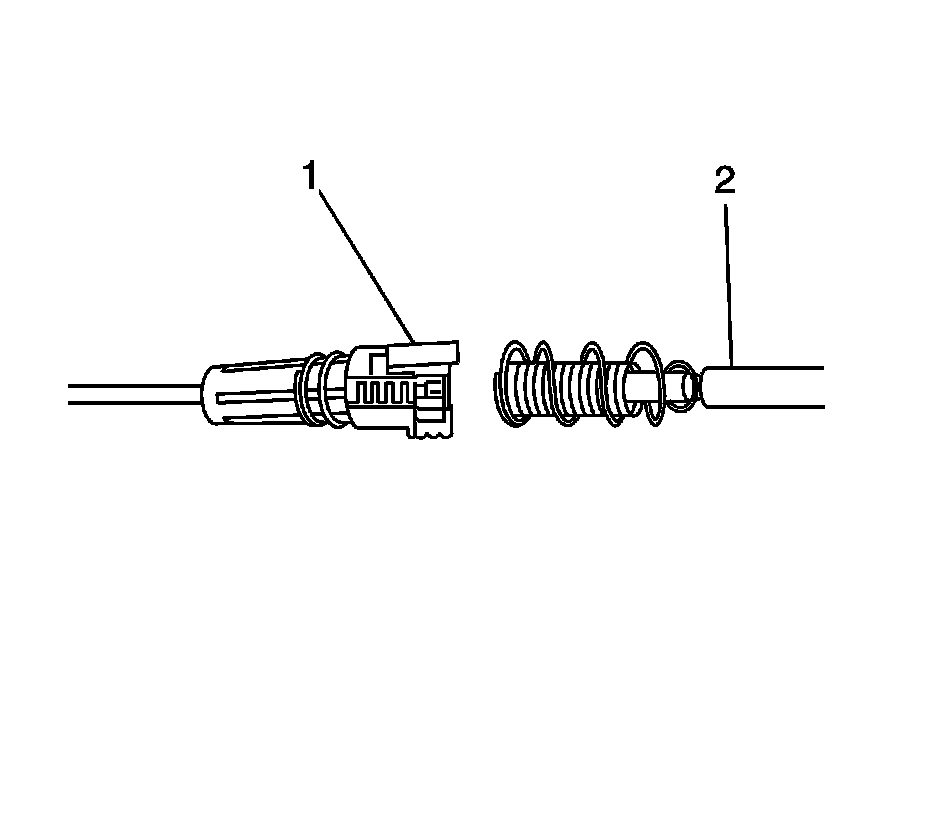

4L60-E/4L65-E/4L70-E - Automatic Transmission
Range Selector Lever Cable Adjustment

1. Ensure that the steering column shift lever is in the park (P) position.
2. Raise and suitably support the vehicle. Refer to Lifting and Jacking the Vehicle.
3. Ensure that the transmission manual shaft lever is in the park (P) position.
4. Grasp the shift cable shifter end (1) in the left hand and the shift cable transmission end (2) in the right hand.
5. Align the outside diameter of the transmission end (2) with the inside diameter of the shifter end (1).
6. Push the end of the transmission cable (3) inside the shifter end until the blue spring (2) on the transmission end (3) is fully compressed, this will engage the inner wire and lock both wires together.
Important: DO NOT hold the transmission end (1) during this operation, this will result in a mis-adjusted cable.
7. Release the transmission end (3) and allow the spring (2) to tension/adjust the cable system.
8. Pull the white cover (5) on the shifter end (1) back.
9. Push the natural colored lock button (4) down to engage the locking teeth on the transmission end (3).
10. Release the white cover (1).
11. Verify the white cover (1) conceals the natural colored lock (2).
12. If the white cover (1) does not conceal the natural colored lock (2), the shift cable must be re-adjusted. Refer to cable re-adjustment below.
13. Lower the vehicle.
14. Test the transmission for proper shift operation.
15. If all of the gear positions cannot be achieved, the shift cable must be re-adjusted. Refer to cable re-adjustment below.
Cable Re-Adjustment
1. Place the steering column shift lever back into the park (P) position.
2. Raise the vehicle.
3. Ensure that the transmission manual shaft lever is in the park (P) position.
4. Pull the white cover (1) back to expose the natural colored lock (2). Under the lock (2), insert a flat-bladed screwdriver under the lock ramp located at the top of the lock. The lock will pop up, and the transmission end will move slightly away from the shifter end.
5. Push the end of the transmission end (3) inside the shifter end (1) until the blue spring (2) on the transmission end (3) is fully compressed, this will engage the inner wire and lock both wires together.
Important: DO NOT hold the transmission end (1) during this operation, this will result in a mis-adjusted cable.
6. Release the transmission end (3) and allow the spring (2) to tension/adjust the cable system.
7. Pull the white cover (5) on the shifter end (1) back.
8. Push the natural colored lock button (4) down to engage the locking teeth on the transmission end (3).
9. Release the white cover (1).
10. Verify the white cover (1) conceals the natural colored lock (2).